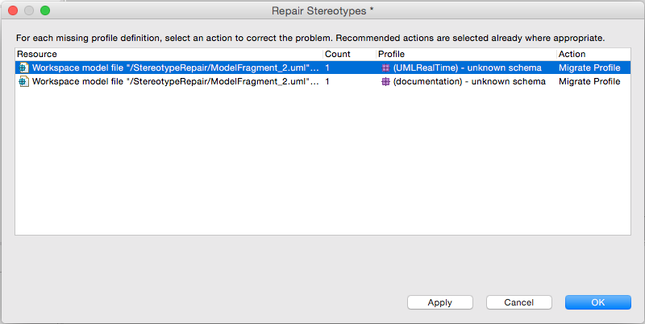

The EMF-based implementation of UML profiles in Papyrus has consequences for the storage of stereotype applications in Papyrus model files. Essentially, each profile applied to a model maps to an XML schema namespace which, upon loading a model, must be resolvable in the form of an EMF EPackage located either in a deployed plug-in or embedded in the UML profile, itself. Because of the dynamic nature of profiles, which can be moved from one location to another or re-defined to produce new versions over time, there are a number of ways in which stereotype applications (being effectively instances of the stereotypes defined in the profile as though they were metaclasses) can drift out of sync with the profile definition:
Also, stereotype applications may sometimes become disconnected from the UML elements that they extend (effectively "dangling stereotypes") even though the correct version of the profile is properly applied. Reasons may be bad merges or bugs in the software, but the result is objects in the model resource that are no longer stereotype applications because they do not extend any model element.
The Stereotype Application Repair function can resolve or otherwise address all of these problems.
Papyrus scans all UML model resources when they are loaded to look for problems with stereotype applications. If any are found, the Repair Stereotypes dialog opens automatically to let the user fix them.

For each discrete XML namespace in a resource that has a problem, the dialog presents:
The dialog may be cancelled at any time, in which case no further action will be taken until the next time the repair dialog is launched. Any problems for which a repair action is selected (being not the Postpone action; see below) may be repaired by pressing the Apply button. The dialog will then remain open to continue with the remaining problems. Or press OK to apply all selected actions (including Postpone) and close the dialog.
The complete set of actions available for fixing a group of stereotype applications is
The dialog initially suggests the best available repair action for each group of broken stereotype applications. Usually this is the Migrate Profile action, which has the best chance of fixing the problem and not losing valuable information from the model. However, in the case of dangling stereotypes (which have become disconnected from the UML elements that they extend), the Migrate Profile action is not available and Delete Stereotypes is suggested instead. This is because these objects are not actually stereotype applications, being not extensions of any UML element, and so there is nothing to repair. If it happens that the elements they were meant to extend still exist and they need to be reconnected, then Papyrus cannot determine two which elements they should be reconnected. In that case, the user must simply take the Postpone option and fix up these objects' base element references by some other means.